AI 에이전트 하네스 엔지니어링
Prompt, Context, Skills, Agents, Hooks, MCP, Evaluation, Loop까지 이어지는 4시간 강의 deck입니다. 각 핵심 주제는 필요한 만큼 전체 화면 확장 슬라이드로 나눕니다.
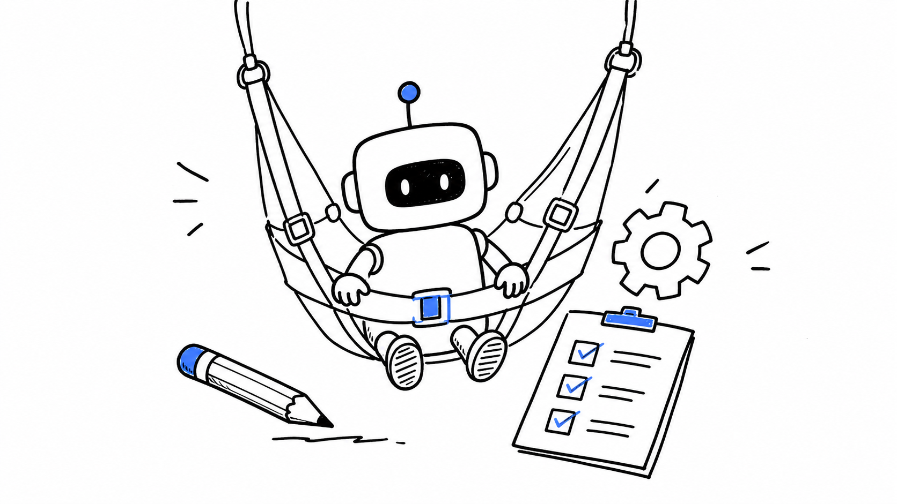
00. 타이틀프롬프트를 넘어 작업 시스템으로
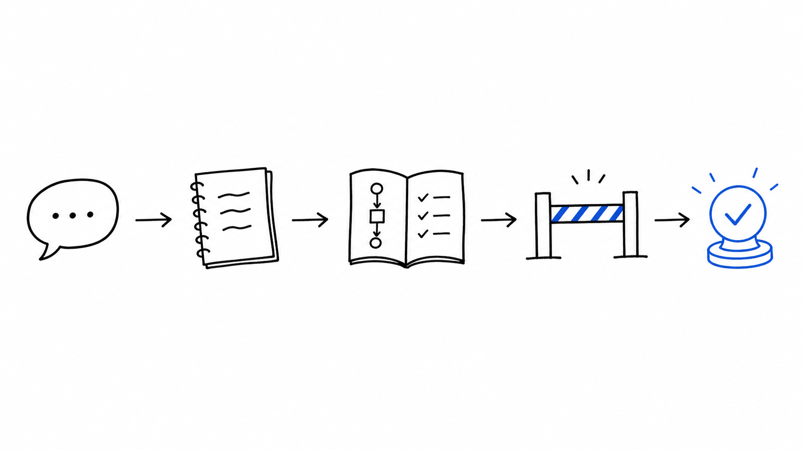
00-1. 작업장 미리보기오늘 만들 최종 하네스 구조
01. 왜 하네스인가AI가 일관되게 일하게 만드는 구조
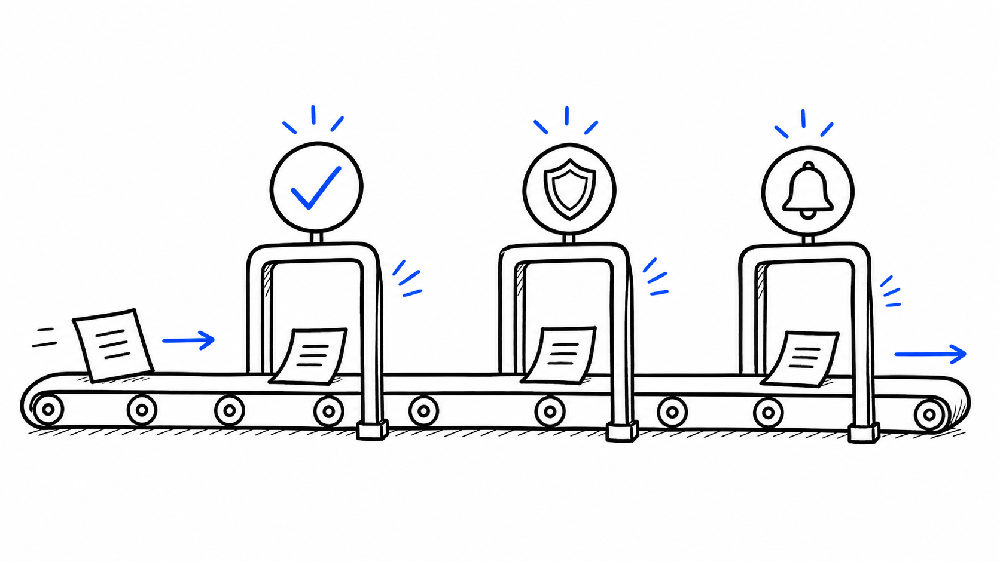
02. 실패 패턴검증 누락, 컨텍스트 오염, 임의 구현
03. 레이어 맵Prompt → Context → Skill → Agent → Hook

04. Prompt Layer가장 작은 하네스
05. Persona역할 부여는 언제 효과적인가
06. Few-shot예시로 출력 품질 고정하기
07. Reasoning Modelsthink step by step 남발하지 않기
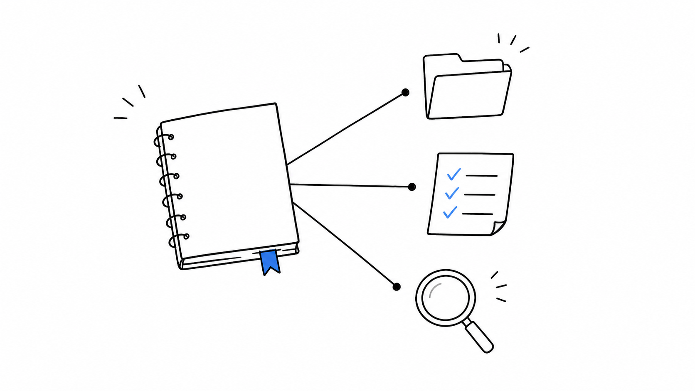
08. CLAUDE.md항상 로드되는 프로젝트 기억
09. Context Engineering필요한 정보만 오래 살리기
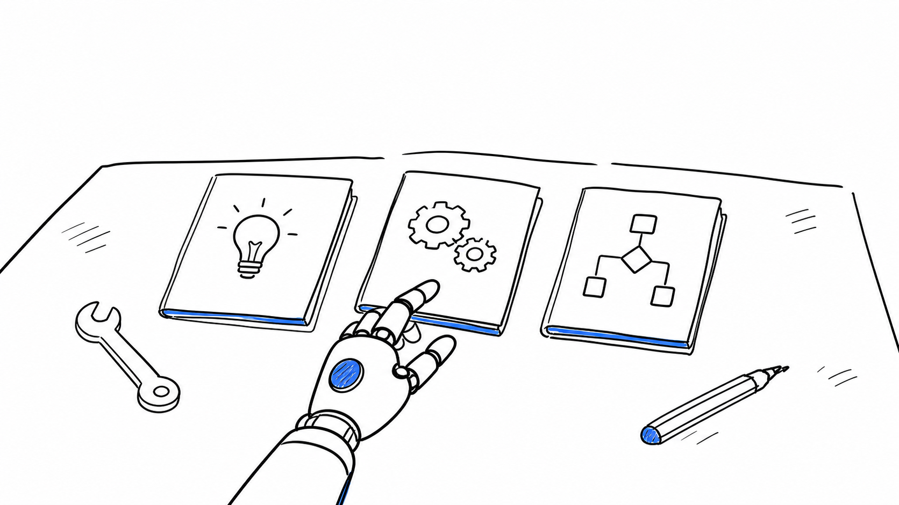
10. Skills반복 절차를 매뉴얼로 승격
11. Skill 구조description, scripts, references, assets
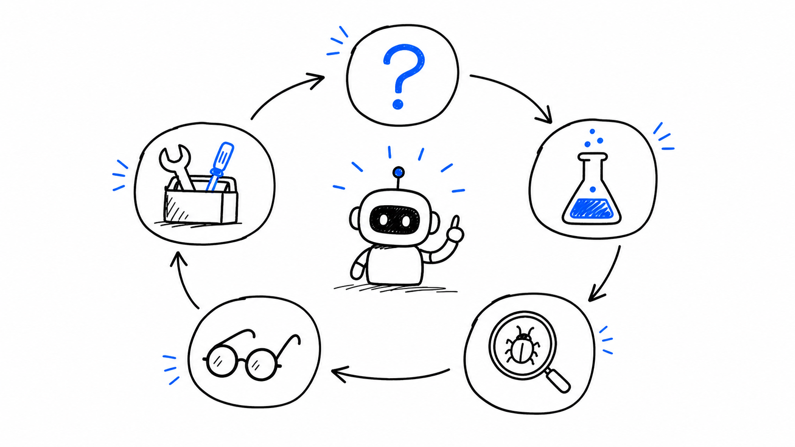
12. Superpowers스킬 기반 개발 방법론 패키지
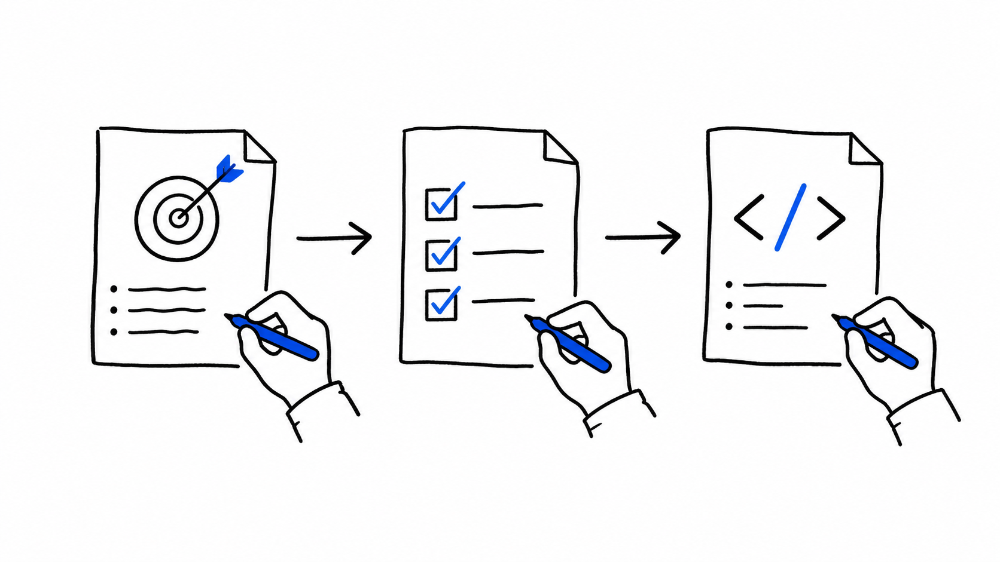
13. Spec-drivenvibe coding의 반대편
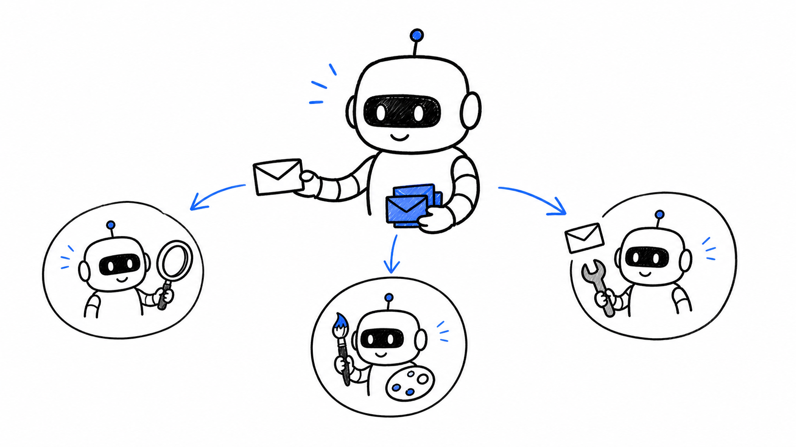
14. Subagents격리된 전문 작업자
15. Agent Teams병렬 검토와 역할 분리
16. Hooks반드시 실행되는 자동화
17. Hook 심화Stop, Prompt, Agent Hook
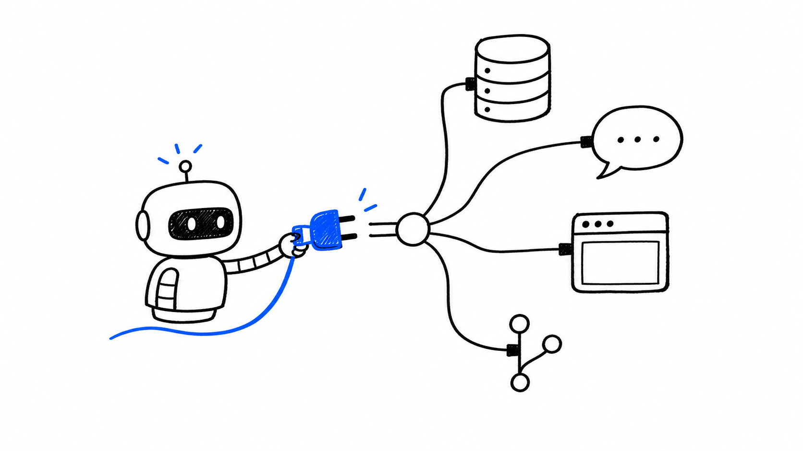
18. MCP / Tool Layer외부 시스템과 연결
실습 5. 역할/도구 분리Deck 생성 검토에도 쓰는 책임 분리
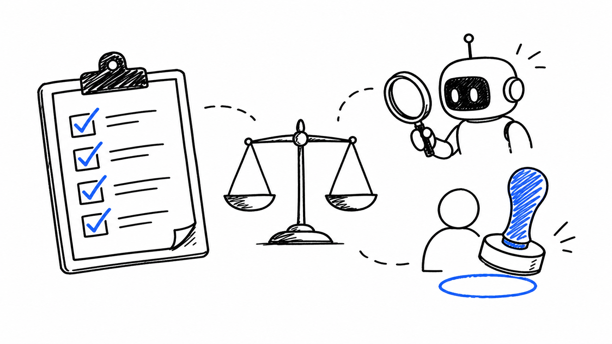
19. Evaluationtest + lint + judge + human review
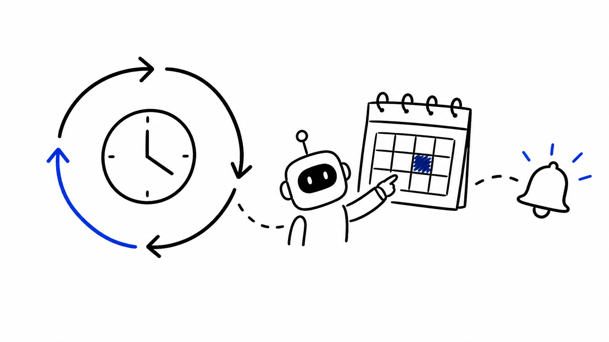
20. Loop / Schedule한 번이 아니라 계속 돌리는 에이전트
실습 6. 검증 게이트test/lint + verify-deck 통과 기준
21. 최종 워크플로우HTML/CSS Deck Automation Harness v1
통합 실습. Few-shot 배치Final workflow에서 출력 형식 고정
21-5. Handoff다음 세션을 위한 상태 파일
실습 8. Handoff 작성Current State, Decisions, Verification, Next Prompt
실습 9. 내 프로젝트 하네스규칙, Skill, 검증 후보 3개